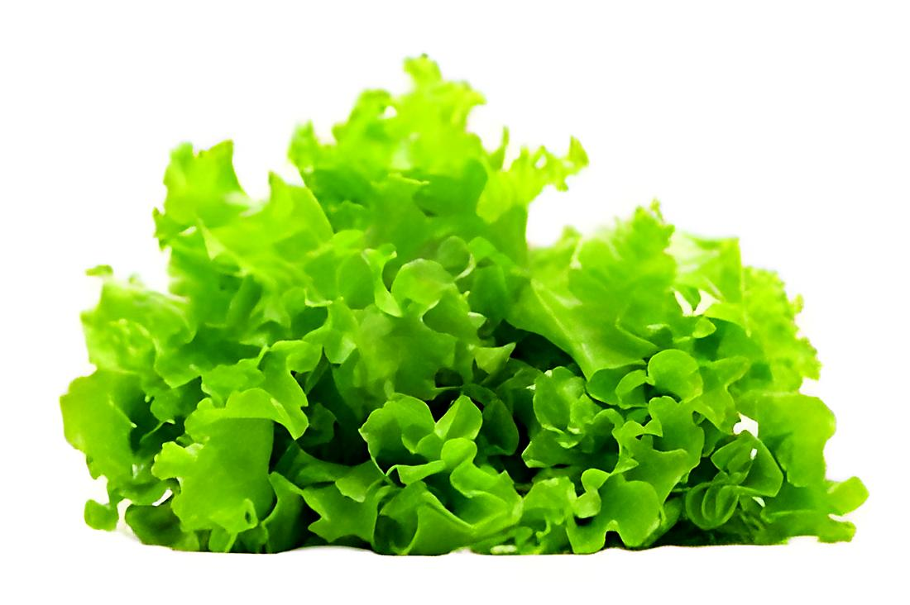

Fraise :
Les fraises se développent à partir du réceptacle charnu des fleurs. Ce sont donc des faux fruits. De forme ovoïde oblongues plus ou moins arrondies, elles sont de couleur rouge ou jaune blanchâtre selon les variétés. Dans un supermarché : un kilo de fraises peut coûter environ 5,95 €/kg (dans un sachet 1 kg). Carrefour.fr Pour une barquette plus petite (variété “locale / française”), on voit des prix autour de ~12,48 €/kg pour 400 g — ce qui correspond à environ 4,99 € la barquette. Carrefour.frSur les marchés ou en période “pointe saisonnière”, le prix au kilo peut varier plus haut — on trouve des fraises à 8-10 €/kg selon variété et saison.

Salade :
La salade se définit comme un mets froid composé de légumes crus ou cuits, de viande, de crustacés, de poisson, de charcuterie, d'œufs, de fromage, assaisonnés d'une vinaigrette, d'une sauce froide, de mayonnaise. Dans ce cas, on précise, par un complément de nom ou un adjectif, qu'il s'agit, par exemple, d'une salade de tomate, d'une salade russe…
a Mayotte on peut le trouver à 2euro sachet.
- Fettouch
- mesclun
- salade cauchoise
- Salade César
- salade de chèvre chaud
- salade grecque
- salade landaise
- salade liégeoise
- slata méchouia
- salade niçoise
- normande
Parmi les salades, on peut trouver plusieurs bases réputées :
| Nom | Prénom | Entreprise | Type de produit | Village |
|---|---|---|---|---|
| houma | anlimou | bacar | pouéta | mirhamou |